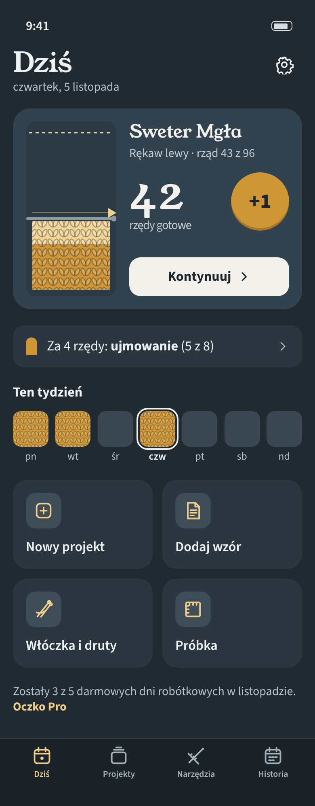
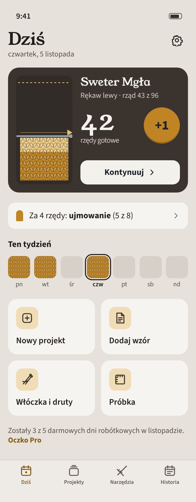
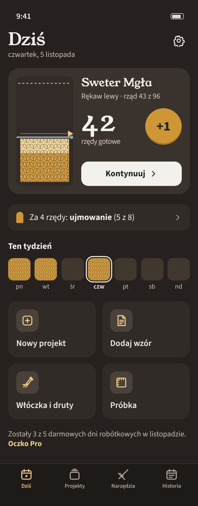
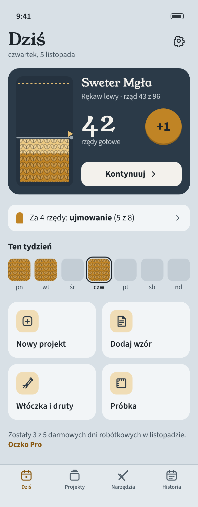
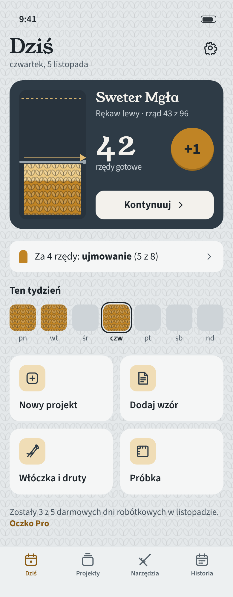

A „Dzianina” — cztery warianty tła (jasny i ciemny w parach)
Mioget (miodowy) i dzianina bez zmian; zmienia się tło, karta, kafle i pasek zakładek. Kontrast AA: kierunki/kontrast-tla.txt.
T1 Shaela (z E2)
chłodna szarość runa; najspokojniejszy, karta wyraźnie odcięta
#E4E8EA#212A31


T2 Musket (cieplejszy)
ciepła szarobrązowa wełna; najbardziej „domowy”, miodowy najmocniej współgra
#E6E1DA#26211E


T3 Emsket (chłodniejszy)
niebieskoszara wełna; najbardziej świeży, miodowy najbardziej świeci
#D8E0E6#1B2630

T4 Shaela z fakturą
T1 z delikatną fakturą oczek na tle (5% krycia); tło przestaje być płaskie
#E4E8EA + V#212A31 + V

Rekomendacja: T2 Musket. Ciepła szarobrązowa wełna łączy się z miodowym akcentem w jedną rodzinę „naturalnej wełny”, a ciemny wariant jest barwny (ciepły brąz-grafit), nie czarny — to odpowiada na „nie może wyglądać jak czarny ekran”. Ryzyko: blisko brązu NaviStories? Nie — tam brąz #6B3815 z bielą jako akcent znaku; tu brąz tylko w ciemnym tle o niskim nasyceniu. T3 jest świeższy, ale ciemny wariant zbliża się do granatu Treningu i Szkoły Pokera. T4: faktura na tle przy dużym tekście nie przeszkadza (5%), ale dubluje element firmowy — dzianina przestaje być wyjątkowa; można dodać później do dowolnego wariantu.